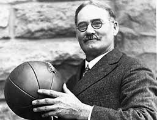

This is about history of basketball
| Welcome Player |
| History |
| The history of basketball began with its invention in 1891 in Springfield, Massachusetts by Canadian physical education instructor James Naismith as a less injury-prone sport than football. Naismith was a 31-year old graduate student when he created the indoor sport to keep athletes indoors during the winters.[1] The game became established fairly quickly and grew very popular as the 20th century progressed, first in America and then in other parts of the world. After basketball became established in American colleges, the professional game followed. The American National Basketball Association (NBA), established in 1946, grew to a multibillion-dollar enterprise by the end of the century, and basketball became an integral part of American culture. |
|  |
| Technique | |
|
1. Dribbling Dribbling is bouncing the ball continuously with one hand at a time without ever holding the ball. Dribbling is necessary in order to take steps while possessing the ball. Once a player picks up their dribble (stops it by holding the ball), they may not dribble again until they pass, shoot, or otherwise lose possession of the ball and the ball touches a different player or the rim or backboard. | |
| 2.Passing | |
| The chest pass is named so because the pass originates from the chest. It is thrown by gripping the ball on the sides with the thumbs directly behind the ball. When the pass is thrown, the fingers are rotated behind the ball and the thumbs are turned down. The resulting follow through has the back of the hands facing one another with the thumbs straight down. The ball should have a nice backspin. When throwing a chest pass, the players should strive to throw it to the receiver's chest level. Passes that go low to high or high to low are difficult to catch. | |
| The bounce pass is thrown with the same motion however it is aimed at the floor. It should be thrown far enough out that the ball bounces waist high to the receiver. Some say try to throw it 3/4 of the way to the receiver, and that may be a good reference point to start, but each player has to experiment how far to throw it so it bounces to the receiver properly. Putting a proper and consistent backspin on the pass will make the distance easier to judge. | |
| The overhead pass is often used as an outlet pass. Bring the ball directly above your forehead with both hands on the side of the ball and follow through. Aim for the teammate's chin. Some coaches advise not bring the ball behind your head, because it can get stolen and it takes a split-second longer to throw the pass. | |
|
3. Pivot The “pivot foot” in basketball refers to a single foot that must stay in contact with the court while in control of the ball. You have the ability to spin and twirl with the pivot foot if it keeps its position on the floor. The pivot foot becomes free once you have dribbled the ball, given the ball up or even when shooting. The other foot is able to make any movement within your ability, as long as it does not change the location of your pivot foot. The meticulous mind of Kobe Bryant has absolutely mastered the pivot foot and all of its hidden abilities! | |
|
4. Shooting Shooting is the act of attempting to score points by throwing the ball through the basket, methods varying with players and situations. Typically, a player faces the basket with both feet facing the basket. A player will rest the ball on the fingertips of the dominant hand (the shooting arm) slightly above the head, with the other hand supporting the side of the ball. The ball is usually shot by jumping (though not always) and extending the shooting arm. The shooting arm, fully extended with the wrist fully bent, is held stationary for a moment following the release of the ball, known as a follow-through. Players often try to put a steady backspin on the ball to absorb its impact with the rim. The ideal trajectory of the shot is somewhat controversial, but generally a proper arc is recommended. Players may shoot directly into the basket or may use the backboard to redirect the ball into the basket. | |
|
5. Rebound The objective of rebounding is to successfully gain possession of the basketball after a missed field goal or free throw, as it rebounds from the hoop or backboard. This plays a major role in the game, as most possessions end when a team misses a shot. There are two categories of rebounds: offensive rebounds, in which the ball is recovered by the offensive side and does not change possession, and defensive rebounds, in which the defending team gains possession of the loose ball. The majority of rebounds are defensive, as the team on defense tends to be in better position to recover missed shots. |
|
This is about history of basketball |